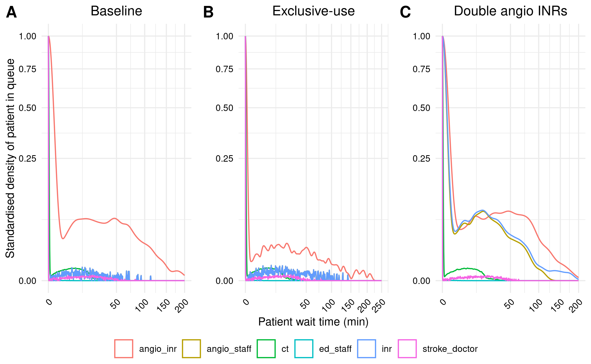
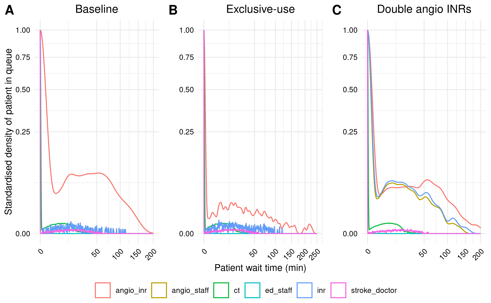

Working on figures 2 + 3 and in-text result 3. Plus (untimed) fixing Quarto book (environment issues). Total time used: 16h 15m (40.6%).
09.04-09.06, 09.14-09.15: Continuing on Figure 2
I was curious to see how a different seed would impact the appearance of the figures, and so tried changing the seed from 200 to 300. However, it looks fairly similar.

Figure 2A Example 1
And with seed 500 too:

Figure 2A Example 2
Untimed: Fixing GitHub commits and action for Quarto book
This is not timed as I feel it is relevant to the Quarto book and not specific to this reproduction, and so reflects an issue I might have ironed out in a test-run, if I had done a second test-run in R (and not just a Python test-run).
Had commit the produced .csv files without recognising they were too large. Undid commits with git reset HEAD^, and switched reproduction to only save relevant rows and columns, and to save as a compressed .csv.gz file. This required adding R.utils to the environment.
Also, modified quarto_publish.yaml to use setup-r-dependencies, but ran into several errors with this. One I could resolve related to having not pushed the renv/ directory. However, one I have struggled to resolve, which was that there is no package called ‘pak’. I’ve tried switching to ubuntu-22.04, as suggested on this issue. Also tried adding pak within the setup action with extra-packages: | any::pak. Still, issue persists.
I explored using conda to manage the R environment, and whether that might actually be easier, as I’ve had alot of challenges with renv for this book (but also in general, having just defaulted to using the latest packages, due to facing major issues installing older R and packages). Based on this tutorial, I created a requirements.txt file then ran the following:
However, this was running into several issues, stating that the packages were not compatabile with the chosen r-base.
Finally, I tried switching back to setup-renv. However, this took a long time to run but it does run (and supposedly future runs can use that cache so it is quicker). However, just like before, it stalls with an error (despite seeing that the renv installation above definitely included rmarkdown):
[19/22] reproduction/reproduction.Rmd
Error in loadNamespace(x) : there is no package called ‘rmarkdown’
Calls: loadNamespace -> withRestarts -> withOneRestart -> doWithOneRestart
Execution halted
R installation:
Version: 4.4.1
Path: /opt/R/4.4.1/lib/R
LibPaths:
- /home/runner/work/_temp/Library
- /opt/R/4.4.1/lib/R/library
knitr: (None)
rmarkdown: (None)
The knitr package is not available in this R installation.
Install with install.packages("knitr")
The rmarkdown package is not available in this R installation.
Install with install.packages("rmarkdown")
ERROR: Error
at renderFiles (file:///opt/quarto/bin/quarto.js:78081:29)
at eventLoopTick (ext:core/01_core.js:153:7)
at async renderProject (file:///opt/quarto/bin/quarto.js:78479:25)
at async renderForPublish (file:///opt/quarto/bin/quarto.js:109334:33)
at async renderForPublish (file:///opt/quarto/bin/quarto.js:104866:24)
at async Object.publish1 [as publish] (file:///opt/quarto/bin/quarto.js:105351:26)
at async publishSite (file:///opt/quarto/bin/quarto.js:109371:38)
at async publish7 (file:///opt/quarto/bin/quarto.js:109590:61)
at async doPublish (file:///opt/quarto/bin/quarto.js:109550:13)
at async publishAction (file:///opt/quarto/bin/quarto.js:109561:9)
Error: Process completed with exit code 1.
Tried adding Rscript{0} as shell for running R code but this was incorrect.
Then tried switching reproduction.Rmd to reproduction.qmd. Re-running the action, it was very very slow (14 minutes) (so seemingly not using the cache). Moreover, it still hit an error as above.
I decided a simpler solution might be to not require R in the Quarto build, and to instead ensure that any scripts using R are pre-rendered in some way (similar to how .ipynb files behave). For .ipynb, the default behaviour is that execute: enabled: false, as in the documentation. However, when run, encountered the error as above.
Tried a few options, including to manually install knitr and rmarkdown, although returned issue that 'lib = "/usr/local/lib/R/site-library"' is not writable.
Did consider other options could be to clone and build examples that are set up with a GitHub action - e.g. renv example, nix example. However, for now, have decided to just disable the action and do it manually from the terminal:
quarto render (rebuilds whole site)
quarto publish (pushes to github pages)
13.34-14.30, 14.39-14.55: Returning to Figure 2
Comparing my figures to the original, although it is now more visually similar than it was, there is still a lot of mismatch compared with those graphs. I’m suspicious this could be due to scaling, as currently I am just using the built in geom_density() scaling to 1, rather than explicitly scaling to the number not waiting. I found the R scripts behind this function unclear.
Instead, I spent some time working out how to scale these manually, ensuring I was definitely dividing each density by the density from wait_time 0, and this confirmed that it matched up with the results from geom_density()’s scaled. As such, it seems the issue is not due to the scaling.
# Create figure as usual
p <- create_plot(res_base,
title="Baseline",
ylab="Standardised density of patient in queue")
# Get data from the plot
plot_data <- ggplot_build(p)$data[[1]]
# Create dataframe with the densities for when the waitimes are 0
no_wait <- plot_data %>% filter(x==0) %>% select(colour, density, scaled)
#print(no_wait)
# Loop through each of the colours (which reflect the resource groups)
for (c in no_wait$colour) {
# Filter the plot data to that resource group, then divide the densities by
# the density from wait time 0
d <- plot_data %>%
filter(colour == c) %>%
mutate(scaled2 = density / no_wait[no_wait$colour==c, "density"]) %>%
ungroup() %>%
select(scaled, scaled2)
# Find the number of rows where these values match the scaled values
n_match <- sum(apply(d, 1, function(x) length(unique(x)) == 1))
n_total <- nrow(d)
print(sprintf("%s out of %s results match", n_match, n_total))
}
Given the scaling seems ok, the only other options I can think of are:
The environment - although I would anticipate that to be more of an issue of a model not running, rather than fundamentally changing results
The model parameters - I’ve had another look back over the model code, and tried changing INR night -
Model was set up to have INR staff on a schedule, but in the paper they are 24 hours. I had set this up by having 1 day and 1 night staff, but I’ve tried changing the code so it’s just a single resource (like how ED team and stroke team are set up)
Otherwise, all parameters look correct compared against Table 1
However, model results came out the same. I am rather stuck on this now, so will move onto Figure 3 (having first, re-run reproduction with seed=200, as per in-text result 1).
14.56-15.26, 15.31-16.19, 16.24-16.56: Starting on Figure 3 and in-text result 3
For this scenario analysis, the “day time working hours of all human resources are extended by up to 2h, extending resource access to all patients” (Huang et al. (2019)). Given how the model scheduling is set-up, it is assumed that this means we simply adjust the schedule to end at 5, 6 or 7pm (and that that would simply shortern the night staff time).
I ran these scenarios, processing and saving the relevant model results.
For in-text result 3, I can see that the results do not match up to the paper. I am not surprised by this though - as the model had no seed control, as it is not mentioned in the paper, we can assume that it might not have been used by the original study, and so variation between the scenarios could (in part) reflect model stochasticity.
import pandas as pdpd.read_csv("txt3.csv")
scenario
shift
mean
diff_from_5pm
0
Baseline
5pm
13.958269
0.00
1
Baseline
6pm
12.486042
-1.47
2
Baseline
7pm
12.491421
-1.47
3
Exclusive use
5pm
8.117729
0.00
4
Exclusive use
6pm
7.802954
-0.31
5
Exclusive use
7pm
6.432643
-1.69
6
Two AngioINRs
5pm
13.511560
0.00
7
Two AngioINRs
6pm
11.408894
-2.10
8
Two AngioINRs
7pm
11.256842
-2.25
To test this assumption, I ran the model again for baseline with two further seeds. We can see the importance of seed control here. For example, with seed 700, we see a broader range of results, with the result for 6pm (13.32) is much higher than for the other two seeds and, compared with their 5pm results, we would’ve seen less of a reduction. Similarly, if we compared the 5pm seed 700 result with the 6pm seed 500 result, we would see a much greater reduction.
pd.read_csv("txt3_seeds.csv")
scenario
5pm
6pm
7pm
0
Baseline
13.96
12.49
12.49
1
Baseline (seed 500)
13.96
12.15
12.20
2
Baseline (seed 700)
15.47
13.32
12.30
For Figure 3, it was simple to adapt the function to create it but, similar to Figure 2, there are several differences in the original study results.

Figure 3
Timings
import syssys.path.append('../')from timings import calculate_times# Minutes used prior to todayused_to_date =790# Times from todaytimes = [ ('09.04', '09.06'), ('09.14', '09.15'), ('13.34', '14.30'), ('14.39', '14.55'), ('14.56', '15.26'), ('15.31', '16.19'), ('16.24', '16.56')]calculate_times(used_to_date, times)
Time spent today: 185m, or 3h 5m
Total used to date: 975m, or 16h 15m
Time remaining: 1425m, or 23h 45m
Used 40.6% of 40 hours max
References
Huang, Shiwei, Julian Maingard, Hong Kuan Kok, Christen D. Barras, Vincent Thijs, Ronil V. Chandra, Duncan Mark Brooks, and Hamed Asadi. 2019. “Optimizing Resources for EndovascularClotRetrieval for AcuteIschemicStroke, a DiscreteEventSimulation.”Frontiers in Neurology 10 (June). https://doi.org/10.3389/fneur.2019.00653.